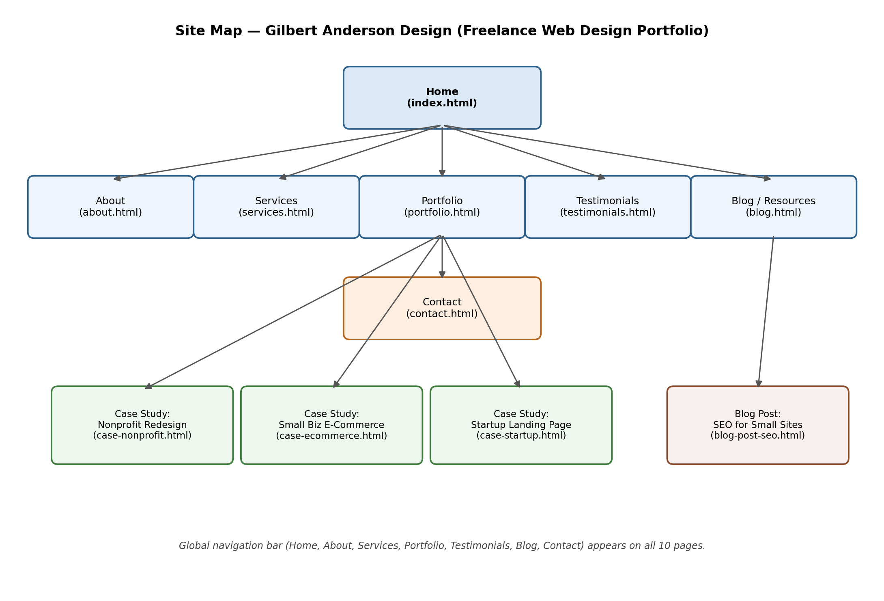
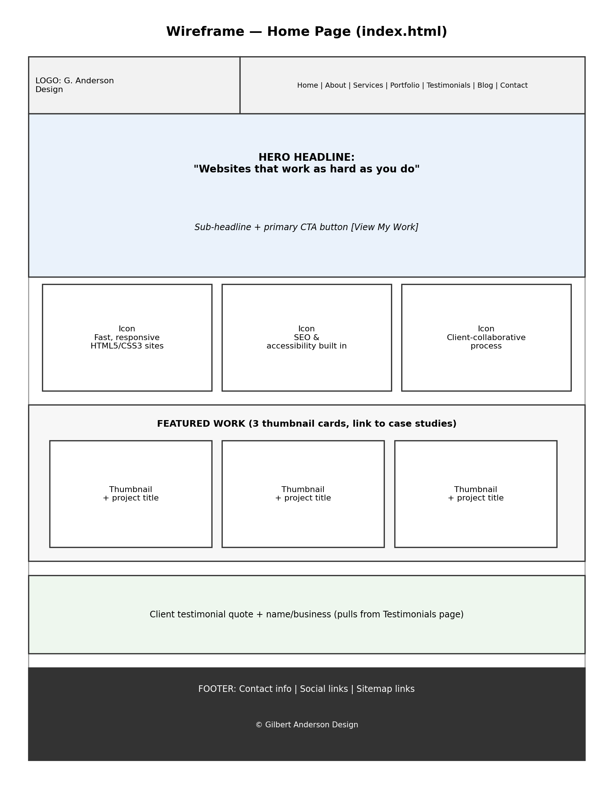
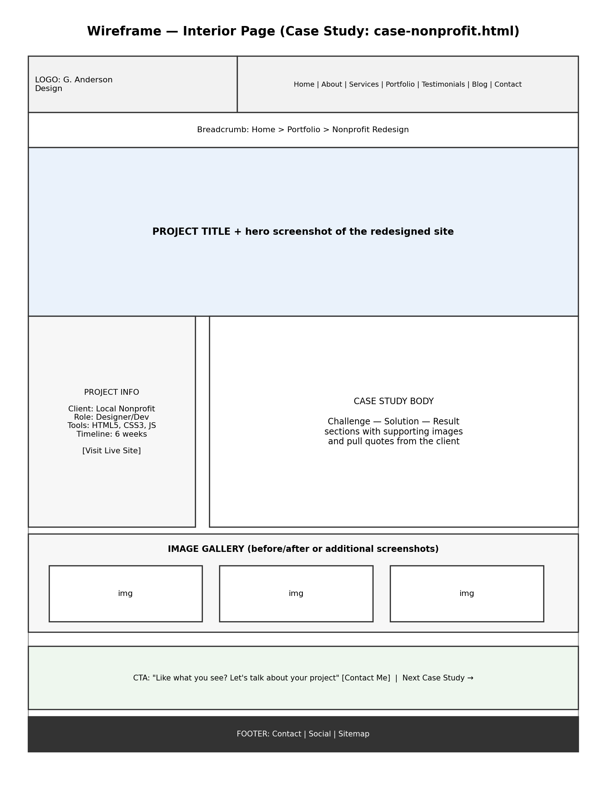
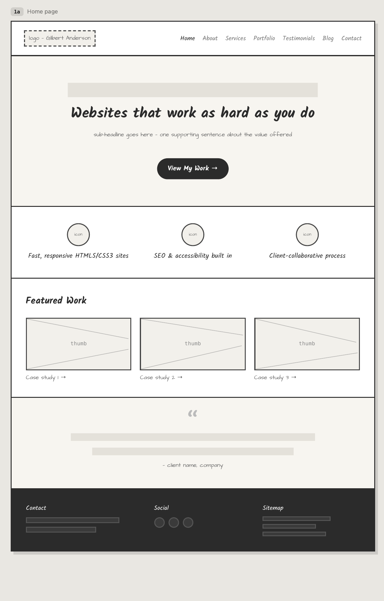
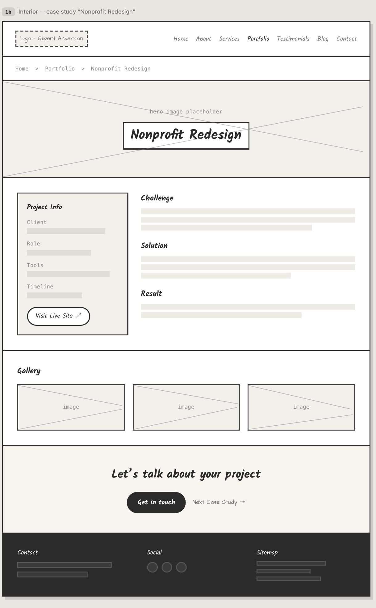

Project 2: Website Proposal (Plan for Project 4)
This is my planning proposal for the Project 4 website: Gilbert Anderson Design, a freelance web design and development portfolio site. The full written proposal, formatted to the assignment requirements, is available as a Word document below. This page summarizes the plan and shows the site map and wireframes.
Client and Topic
This proposal is for a portfolio website of my own work, and there is no outside client here since I am both the designer and the subject matter: a freelance web design and development portfolio site branded as Gilbert Anderson Design, covering my HTML5, CSS3, and JavaScript project work, my design process, and the services I would offer to potential freelance clients and employers.
Target Audience
The audience breaks into two overlapping groups: small-business and nonprofit owners who want proof of past work and a sense of pricing, and hiring managers or recruiters who care more about clean code and organized case studies than sales copy. Three quick personas keep both instincts in mind while I design: Maria Contreras (bakery owner), Tom Reyes (nonprofit program director), and Priya Nakamura (technical recruiter).
Organization and Site Map
The site uses a flat information architecture with ten HTML5 pages, all reachable in one click from global navigation: Home, About, Services, Portfolio, three case studies, Testimonials, a Blog index, and a sample Blog Post.

Wireframes
Two wireframe passes are included: an original low-fidelity version built programmatically in Matplotlib, and a second, higher-fidelity version produced in Claude Design.




Security, Hosting, and Marketing
The site has no e-commerce component, no password-protected content, and no user accounts, since the only interaction is a one-way contact form. Hosting will be chosen through a scored comparison against reliability, SSL support, deployment method, cost, and support criteria, with gilbertandersondesign.com identified as the target domain. Marketing leans on direct outreach and SEO fundamentals: descriptive titles and meta descriptions, a clean heading hierarchy, alt text, and semantic HTML5.
References
- Nielsen Norman Group. (n.d.). Personas. https://www.nngroup.com/topic/personas/
- HubSpot. (n.d.). Target audience: How to find yours. https://blog.hubspot.com/marketing/target-audience
- Elementor. (n.d.). How to choose a web host: The ultimate guide for web creators. https://elementor.com/blog/how-to-choose-a-web-host/
- Moz. (n.d.). Meta description. https://moz.com/learn/seo/meta-description
- W3C Web Accessibility Initiative. (n.d.). Introduction to web accessibility. https://www.w3.org/WAI/fundamentals/accessibility-intro/